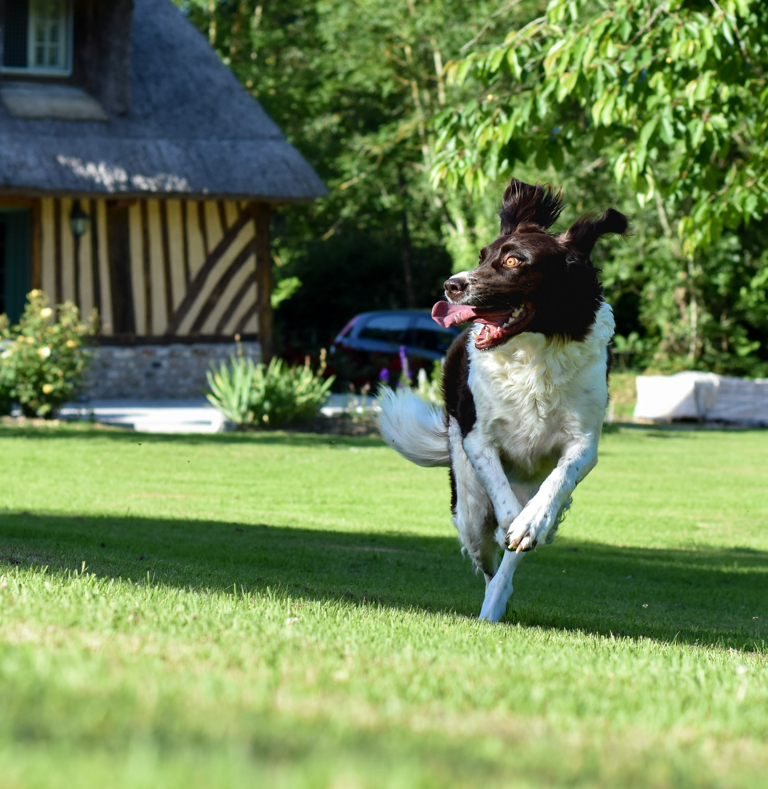

Welcome to Furry Faces Pet Saloon! We're a brand new pit stop in your pets journey for toys, treats, food, litter, vaccinations, grooming, and even boarding. Our philosophy is simple, if it makes their tail wag then it must be good. On our website you can register your pet for services, and if you are a provider you can register your services for pets. We look forward to seeing you some time!

Our mission is simple: to deliver the highest quality pet care to out community. We know your furry friend keeps you going sometimes and leads a happy life in your capable hands, we want it to stay that way. To prove it we don't stop at delivering high quality pet care, 10% of all our profit goes to sheltering strays and seeing that malnourished and street-running pets get adequate medical care and a forever home.